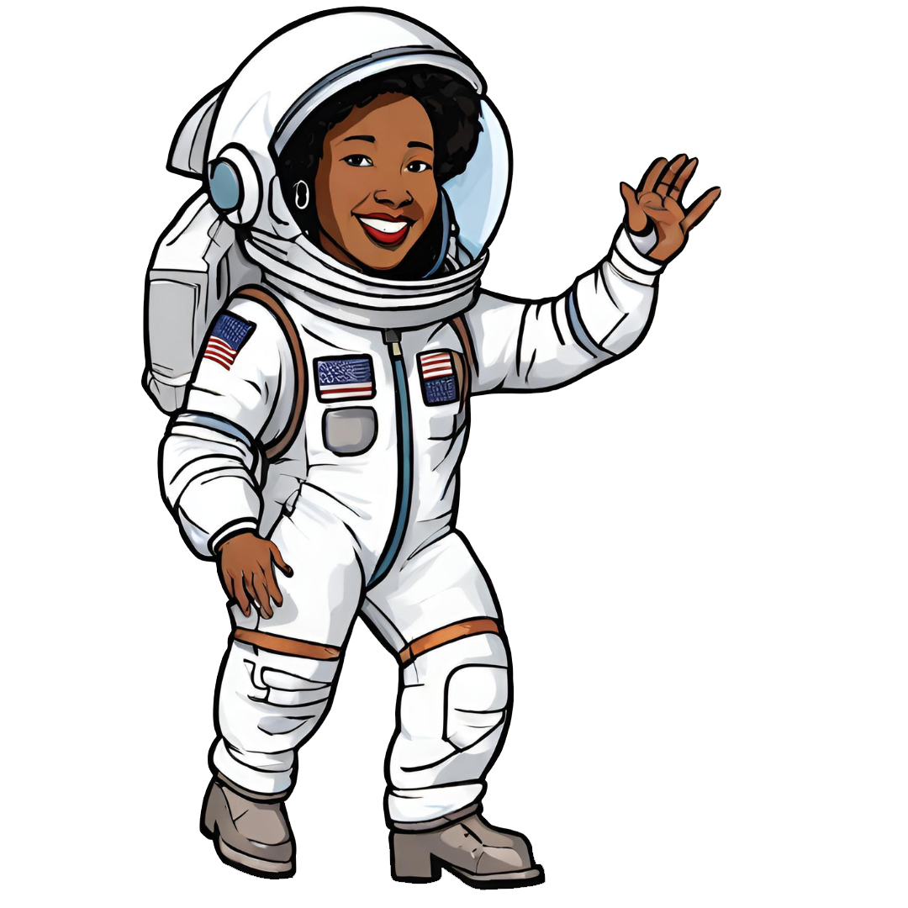

Mae Jemison
Médica, engenheira e ex-astronauta, foi a primeira astronauta negra a embarcar em uma viagem espacial.
Precisou quebrar muitos preconceitos durante sua vida, mas sempre teve o apoio e incentivo da sua família. Mostrou-se mais do que capaz ir ao infinito e além!
Projeto dedicado a ela, que assim como eu, é apaixonada pela dança!